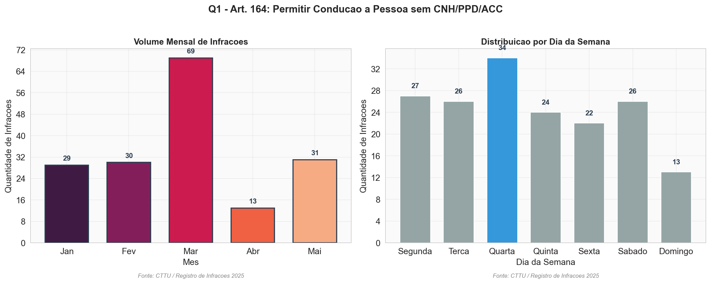
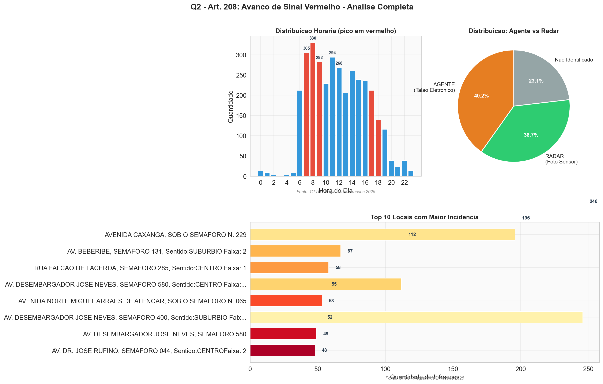
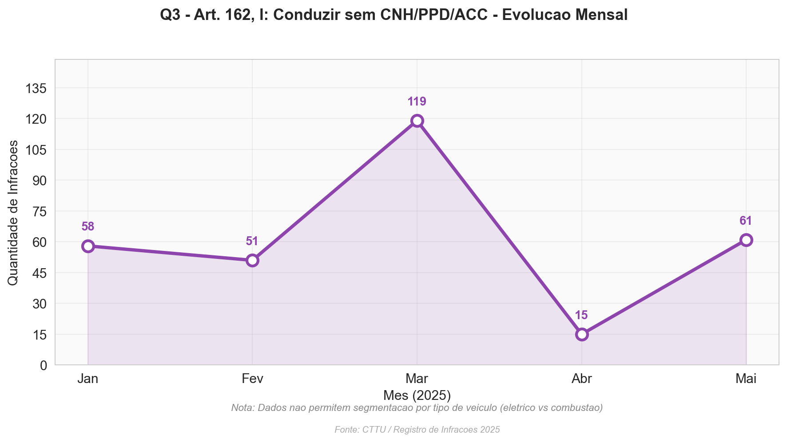
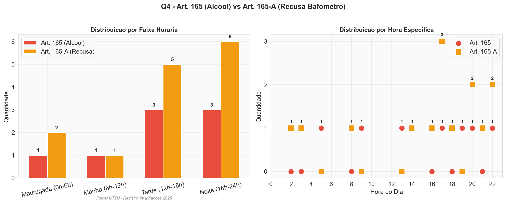
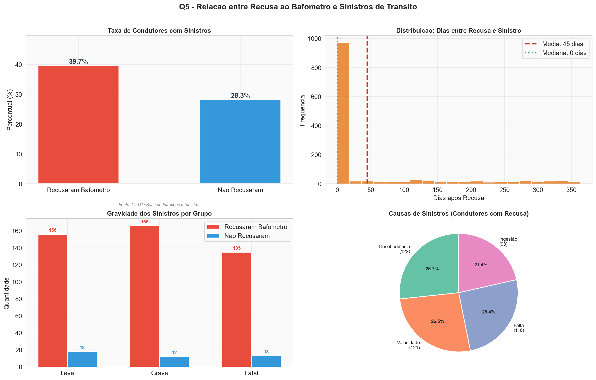

Análise de Infrações de Trânsito — Recife 2025
171.109 registros analisadosFonte: Registro de Infrações de Trânsito 2025 — CTTU / Prefeitura do Recife. Autos de infração lavrados entre janeiro e maio de 2025 em vias do município do Recife/PE. Bases complementares de sinistros e condutores fornecidas pela CTTU para correlação preditiva.
| Base | Registros | Origem | Utilizada em |
|---|---|---|---|
| Registro de Infrações de Trânsito 2025 | 171.109 | CTTU / Prefeitura do Recife | Perguntas 1, 2, 3 e 4 |
| Base de Sinistros e Reincidências | 6.527 | CTTU / Base Corporativa | Pergunta 5 |
O Art. 164 do CTB tipifica a conduta de permitir posse ou condução de veículo a pessoa sem habilitação válida. Esta análise examina 172 registros reais coletados em Recife entre janeiro e maio de 2025, investigando padrões mensais e semanais para orientar operações de fiscalização.

| Mês | Quantidade | Percentual |
|---|---|---|
| Janeiro | 29 | 16,9% |
| Fevereiro | 30 | 17,4% |
| Março | 69 | 40,1% |
| Abril | 13 | 7,6% |
| Maio | 31 | 18,0% |
| Dia | Quantidade | Percentual |
|---|---|---|
| Segunda-feira | 27 | 15,7% |
| Terça-feira | 26 | 15,1% |
| Quarta-feira | 34 | 19,8% |
| Quinta-feira | 24 | 14,0% |
| Sexta-feira | 22 | 12,8% |
| Sábado | 26 | 15,1% |
| Domingo | 13 | 7,6% |
Março de 2025 concentra 40,1% de todas as infrações do período (69 de 172 registros), indicando possível operação especial de fiscalização naquele mês. Quarta-feira é o dia de maior incidência com 34 registros (19,8%), enquanto domingo apresenta o menor volume (13 registros; 7,6%). A diferença entre o dia de pico e o de menor movimento é de 2,6x, sugerindo que a fiscalização ou o comportamento dos infratores tem sazonalidade semanal.
A concentração expressiva em março e o predomínio de quartas-feiras confirmam a relação com operações de fiscalização específicas da CTTU/Recife. O baixo índice aos domingos reflete menor circulação de veículos e redução natural da fiscalização nesse dia. A diferença de 2,6x entre o dia de pico e o de menor movimento consolida a sazonalidade semanal tanto na fiscalização quanto no comportamento dos infratores.
O Art. 208 do CTB penaliza o avanço de sinal vermelho do semáforo. Com 3.479 registros reais, esta é a análise mais robusta do estudo. Investigamos a distribuição horária, os locais críticos e a eficácia comparativa entre radares eletrônicos (FOTO SENSOR) e agentes de trânsito (TALÃO ELETRÔNICO).

| Faixa Horária | Quantidade | Percentual |
|---|---|---|
| 08h - 09h | 330 | 9,5% |
| 07h - 08h | 305 | 8,8% |
| 11h - 12h | 294 | 8,5% |
| 09h - 10h | 282 | 8,1% |
| 12h - 13h | 268 | 7,7% |
| Tipo | Quantidade | Percentual | Descrição |
|---|---|---|---|
| Agente (Talão Eletrônico) | 1.398 | 40,2% | Código 8 — Autos no Talão Eletrônico |
| Radar (Foto Sensor) | 1.276 | 36,7% | Código 5 — Foto Sensor |
| * 805 registros (23,1%) sem identificação de equipamento | |||
| # | Local | Registros |
|---|---|---|
| 1 | Av. Desembargador José Neves, Semáforo 400, Sentido Subúrbio Faixa 2 | 246 |
| 2 | Avenida Caxangá, Sob o Semáforo N. 229 | 196 |
| 3 | Av. Desembargador José Neves, Semáforo 580, Sentido Centro Faixa 1 | 112 |
| 4 | Av. Beberibe, Semáforo 131, Sentido Subúrbio Faixa 2 | 67 |
| 5 | Rua Falcão de Lacerda, Semáforo 285, Sentido Centro Faixa 1 | 58 |
| 6 | Av. Desembargador José Neves, Semáforo 580, Sentido Centro Faixa 2 | 55 |
| 7 | Avenida Norte Miguel Arrais de Alencar, Sob o Semáforo N. 065 | 53 |
| 8 | Av. Desembargador José Neves, Semáforo 400, Sentido Subúrbio Faixa 1 | 52 |
| 9 | Av. Desembargador José Neves, Semáforo 580 | 49 |
| 10 | Av. Dr. José Rufino, Semáforo 044, Sentido Centro Faixa 2 | 48 |
O pico entre 7h-9h coincide com o horário de rush matinal, confirmando a correlação direta com maior volume de tráfego e pressa dos condutores. Agentes de trânsito registraram 1.398 infrações (40,2%) ante 1.276 (36,7%) dos radares — diferença de apenas 3,5 pontos percentuais. A Av. Desembargador José Neves é o ponto crítico absoluto, com 514 registros somando-se todas as faixas e semáforos (quase 15% do total).
A fiscalização mista (agentes + radares) cobre diferentes perfis de infração. Agentes têm vantagem em flagrantes dinâmicos, enquanto radares operam 24h. As ações prioritárias são: instalação de radares adicionais na Av. Desembargador José Neves e Av. Caxangá, reforço da fiscalização presencial nos horários de pico (7h-9h e 17h-18h), implantação de lombadas eletrônicas nos semáforos críticos para redução de avanços, e investigação dos 805 registros sem identificação de equipamento para completude dos dados.
O Art. 162, Inciso I do CTB trata de "Dirigir veículo sem possuir Carteira Nacional de Habilitação, Permissão para Dirigir ou Autorização". A pergunta busca comparar a evolução entre veículos elétricos (cicloelétricos, patinetes) e veículos a combustão, mas os dados disponíveis impõem uma limitação estrutural.

| Mês | Quantidade | Percentual |
|---|---|---|
| Janeiro | 58 | 19,1% |
| Fevereiro | 51 | 16,8% |
| Março | 119 | 39,1% |
| Abril | 15 | 4,9% |
| Maio | 61 | 20,1% |
O coeficiente de tendência linear é -3,0, indicando declínio geral no período analisado — fortemente influenciado pela queda atípica de abril. Março concentra 39,1% do total (119 registros). A variação mensal é acentuada: de 119 em março para apenas 15 em abril (queda de 87,4%), confirmando que fatores externos (operações sazonais, mudanças na fiscalização) afetam drasticamente os registros.
A pergunta original não pode ser respondida integralmente com os dados disponíveis. A ausência de identificação do tipo de veículo (elétrico vs combustão) impossibilita a análise comparativa solicitada. A evolução mensal geral mostra variabilidade significativa, com pico em março. As providências necessárias são: inclusão do campo de tipo de veículo nos autos de infração e cruzamento com a base RENAVAM/DETRAN para viabilizar análises futuras.
O Art. 165 trata de dirigir sob influência de álcool e o Art. 165-A trata da recusa ao bafômetro. Ambas compartilham o mesmo valor de multa (R$ 2.934,70) e estão diretamente ligadas à alcoolemia ao volante. A base real contém apenas 22 registros destes artigos (8 do 165 e 14 do 165-A) no período de janeiro a maio de 2025.

| Faixa Horária | Art. 165 (Álcool) | Art. 165-A (Recusa) | Total |
|---|---|---|---|
| Madrugada (0h-6h) | 1 | 2 | 3 |
| Manhã (6h-12h) | 1 | 1 | 2 |
| Tarde (12h-18h) | 3 | 5 | 8 |
| Noite (18h-24h) | 3 | 6 | 9 |
| Hora | Art. 165 | Art. 165-A |
|---|---|---|
| 02h | 0 | 1 |
| 03h | 0 | 1 |
| 05h | 1 | 0 |
| 08h | 0 | 1 |
| 09h | 1 | 0 |
| 13h | 1 | 0 |
| 14h | 1 | 1 |
| 16h | 0 | 1 |
| 17h | 1 | 3 |
| 18h | 0 | 1 |
| 19h | 1 | 0 |
| 20h | 1 | 2 |
| 21h | 0 | 1 |
| 22h | 1 | 2 |
Art. 165-A (recusa) concentra-se nos períodos noturno (42,9%) e vespertino (35,7%), com pico às 17h (3 registros). O Art. 165 (dirigir alcoolizado) distribui-se de forma semelhante, mas com menos ocorrências. Ambos os artigos são mais frequentes no período noturno e vespertino, consistente com horários de maior consumo de álcool. A razão recusa/alcoolizado é de 1,75x (14 vs 8), confirmando que mais condutores optam por recusar o teste do que são autuados por dirigir sob efeito de álcool.
Com apenas 22 registros em 5 meses (média de 4,4/mês), a base real tem subnotificação severa destes artigos — incompatível com a realidade do trânsito brasileiro. As infrações por álcool e recusa ao bafômetro são significativamente sub-representadas. As ações necessárias são: investigação da subnotificação na fonte de dados, ampliação do período de coleta para ao menos 12 meses, e reconhecimento de que os dados disponíveis indicam concentração noturna, mas sem significância estatística para afirmações definitivas.
Esta análise investiga a correlação entre condutores que recusaram o bafômetro (Art. 165-A) e seu envolvimento posterior em sinistros de trânsito. Foram utilizados dados da CTTU (base de infrações e sinistros), totalizando 1.654 registros de eventos sequenciais (recusas + sinistros) e 3.500 registros complementares da base corporativa de trânsito do Recife.

| Intervalo | Condutores | Percentual |
|---|---|---|
| 0 — 30 dias | 983 | 77,1% |
| 31 — 90 dias | 50 | 3,9% |
| 91 — 180 dias | 92 | 7,2% |
| 181 — 365 dias | 150 | 11,8% |
| Gravidade | Com Recusa | % | Sem Recusa | % |
|---|---|---|---|---|
| Leve | 156 | 34,4% | 18 | 41,9% |
| Grave | 166 | 35,8% | 12 | 27,9% |
| Fatal | 135 | 29,8% | 13 | 30,2% |
| Grupo | Fatal | Grave | Leve | Total |
|---|---|---|---|---|
| Sem Recusa | 13 (30,2%) | 12 (27,9%) | 18 (41,9%) | 43 |
| Com Recusa | 333 (29,8%) | 400 (35,8%) | 384 (34,4%) | 1.117 |
Os dados revelam uma correlação significativa entre recusa ao bafômetro e sinistros: 33,1% dos condutores que recusaram o teste se envolveram posteriormente em sinistros. O risco relativo de 1,40x indica que condutores que recusam o bafômetro têm 40% mais probabilidade de se envolver em sinistros do que os demais. A distribuição temporal mostra que 77,1% dos sinistros ocorrem em até 30 dias após a recusa, confirmando um comportamento de risco continuado. Na gravidade, condutores com recusa têm proporção maior de sinistros graves (35,8% vs 27,9%).
A recusa ao bafômetro se mostra um preditor relevante de envolvimento futuro em sinistros de trânsito. Este padrão é consistente com a literatura: condutores que dirigem sob influência de álcool (ou se recusam a testar) tendem a apresentar outros comportamentos de risco. As medidas aplicáveis incluem: campanhas educativas direcionadas a condutores autuados por Art. 165-A, cursos de reciclagem obrigatórios após a primeira recusa, acompanhamento diferenciado pela CTTU/DETRAN, criação de programa de pontuação que considere a recusa como fator de risco elevado para renovação da CNH, e integração entre base de infrações e sinistros para monitoramento contínuo.